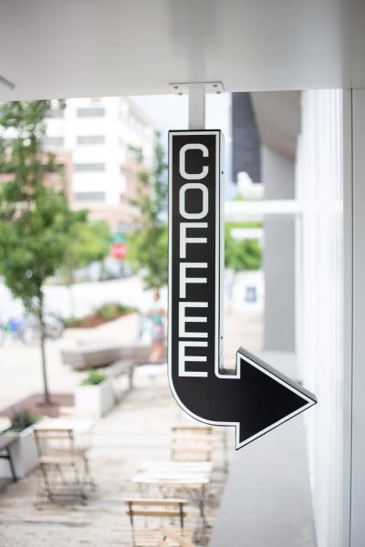

Favorite Coffee Shops
The best of San Francisco.

I love plants almost as much as I love coffee! There's something so incredibely satisfying about caring for plants and witnessing them flourish before you very eyes! Plants are best watered in the morning when they can best retain water and take in the morning sunshine. Among my morning rituals is watering my plants, while drinking my favorite cup of joe.
I guess I get my green thumb from my grandmother. She would collect plants like her life depended on it. She lived in an urban jungle long before it was trendy. Her favorite plant was the Devile's Vine (Epipremnum aureum), was nothing less than a aerial magician. It fearlessly scaled my grandmother's living room wall and took to defiently taking over the ceiling. So what's the secret to growing these incredible plants? Coffee Grinds. That's right those coffee grinds you throw away are a plant's best friend. Is this sceintifally plausible? I have no idea. But it's something I do all the time, and my plants are living proof that a little gring goes a long way.
SO don't throw out those grinds, your plants will love you for it!
xoxo Amy

The best of San Francisco.

Our furry companions.

Favorite books to read with coffee.